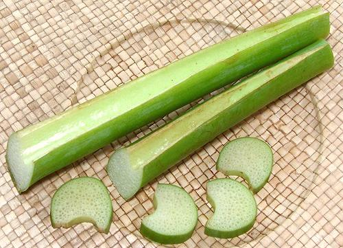

Giant Elephant Ear

[Bac Ha (Viet - South and U.S.); Doc Mung, Roc Mung (Viet - North);
Indian Taro; Hasu-imo, Ryukyu (Japan); Manto de Eva (Chile)
Colocasia gigantea]
This plant is native to Southeast Asia, and is thought to be a natural
cross between Alocasia macrorrhizos and Colocasia esculenta
(Taro). The stems are eaten as a vegetable in Southeast Asia,
particularly Vietnam, and in Japan. The root corms of this species are
fibrous and inedible, and the leaves are not particularly edible either.
More on Arums.
 The photo to the left shows what the plant looks like. Some varieties
can grow leaves up to 5 feet across. The stems are peeled and used as
slices or short segments, mostly in soups. They have little flavor, but
are valued for their foamy sponge-like texture and ability to hold a lot
of the broth flavor.
Photo by Dick Culbert distributed under license
Creative Commons
Attribution-ShareAlike v2.0 Generic.
The photo to the left shows what the plant looks like. Some varieties
can grow leaves up to 5 feet across. The stems are peeled and used as
slices or short segments, mostly in soups. They have little flavor, but
are valued for their foamy sponge-like texture and ability to hold a lot
of the broth flavor.
Photo by Dick Culbert distributed under license
Creative Commons
Attribution-ShareAlike v2.0 Generic.
Buying:
Colocasia stems are available in Asian markets
that serve a Southeast Asian community. The photo specimens was a stem
cut into segments for easy handling. The largest segment was 2-1/8 inch
across the big end. Purchased from a large Asian market in Los Angeles
(San Gabriel) for 2016 US $3.99 / pound. It is very light, so 11 segments
averaging 7 inches long weighed only 1-1/8 pound.
am_colostmz 160613 www.clovegarden.com
© Andrew Grygus - agryg@clovegarden.com - Photos on
this page not otherwise credited are ©
cg1.- Linking to and non-commercial use
of this page permitted.